메신저 이용법
메신저 이용법
동료와 대화하고 파일을 주고받는 방법을 그림과 함께 설명합니다. 그림의 1 같은 빨간 번호는 바로 옆 설명의 순서 번호와 같습니다. 그림은 PC(Windows) 화면이고, 휴대폰에서 다른 부분은 맨 아래 안드로이드 휴대폰에서에 따로 모았습니다.
1시작하기
앱을 설치했다면 서버에 연결하고, 로그인한 뒤, 일할 팀을 고르면 준비가 끝납니다. 설치 방법은 처음 페이지에 있습니다.
서버 연결(처음 한 번)
앱을 처음 켜면 서버 연결 화면이 나옵니다. 관리자나 동료가 보내 준 초대 링크를 열었다면 주소와 코드가 저절로 채워져 있으니 연결만 누르면 됩니다.

서버 주소에 관리자가 알려 준 주소를 넣습니다. 예:
https://192.168.0.10:3000칸에 이미 주소가 적혀 있어도, 관리자가 알려 준 주소와 다르면 지우고 새로 입력하세요.코드 칸에는 초대 페이지에 적힌 코드(또는 관리자가 알려 준 4자리 코드)를 넣습니다. 이 서버에 처음 연결할 때만 필요합니다.
연결을 누릅니다. 연결되면 로그인 화면으로 바뀝니다.
로그인

아이디를 입력합니다.
비밀번호를 입력합니다.
로그인 상태 유지에 체크해 두면 다음에 앱을 켤 때 로그인하지 않아도 됩니다. 아이디 기억하기에 체크하면 아이디 칸이 미리 채워집니다.
로그인을 누릅니다. 비밀번호 칸에서 Enter를 눌러도 됩니다.
회원가입
계정이 없다면 로그인 화면 아래의 계정이 없으신가요? 회원가입(위 그림의 5)을 누릅니다. 아래 순서대로 채우고 가입합니다.

아이디(4~20자)를 쓰고 중복 확인을 누릅니다. 사용 가능한 아이디입니다.가 보이면 됩니다.
비밀번호를 두 번 똑같이 입력합니다. 문자와 숫자 4~20자이고, 특수문자도 쓸 수 있습니다.
동료에게 보일 이름을 입력합니다.
이메일 주소를 입력합니다. @ 뒤는 목록에서 고르거나 직접 입력을 골라 씁니다.
본인 확인용 질문을 정하고 답을 적습니다. 목록에서 선택으로 고르거나 직접 작성으로 질문을 직접 만들 수 있습니다.
가입하기를 누릅니다.
팀 고르기
로그인하면 내가 속한 팀 리스트가 나옵니다. 팀은 회사 안의 작은 공간이고, 대화방·검색·파일이 팀마다 따로 있습니다.

들어갈 팀의 팀으로 가기를 누릅니다. 그 팀의 대화 화면이 열립니다.
새 팀이 필요하면 팀 생성하기를 누릅니다. 만든 사람이 그 팀의 소유자가 됩니다. (서버 설정에 따라 팀을 만들 수 없는 등급도 있습니다. 그때는 안내 문구가 나옵니다.)
2화면 둘러보기
한눈에 보기

| 번호 | 이름 | 하는 일 |
|---|---|---|
| 1 | 팀 이름 | 지금 보고 있는 팀입니다. 누르면 다른 팀으로 옮길 수 있습니다. |
| 2 | 대화방 목록 | 토픽, 그룹채팅, 채팅(1:1) 세 칸으로 나뉩니다. 방 이름을 누르면 오른쪽에 대화가 열립니다. |
| 3 | 대화 내용 | 연 대화방의 메시지가 보입니다. 가장 최근 메시지가 맨 아래에 있습니다. |
| 4 | 입력칸 | 메시지를 쓰고 보내는 곳입니다. 아래 줄에 이모티콘·파일·서식·캡처 버튼이 있습니다. |
| 5 | 오른쪽 위 아이콘 | 프로젝트, 알림 센터, 멤버, 검색, 메뉴, 내 메뉴(☰)입니다. 아래에서 하나씩 설명합니다. |
대화방의 종류
| 종류 | 설명 | 이럴 때 좋아요 |
|---|---|---|
| 토픽 | 주제별 대화방입니다. 공개 토픽은 정회원이면 누구나 참여 가능한 토픽 보기에서 찾아 들어올 수 있습니다(저절로 들어가지는 않습니다). 비공개 토픽은 초대받은 사람만 볼 수 있고, 목록에서 이름 옆에 회색 자물쇠(🔒)가 붙습니다. 대화를 주고받는 챗 뷰와 게시글을 올리는 보드 뷰가 있고, 공지를 올릴 수 있습니다. | 부서 방, 전사 공지, 프로젝트별 방, 자료 게시판 |
| 그룹채팅 | 여러 사람을 골라 만드는 대화방입니다. | 몇 명끼리 잠깐 의논할 때 |
| 채팅 | 한 사람과 나누는 1:1 대화입니다. | 개인적인 업무 연락 |
| 🔒 비밀 대화 | 이름이 초록색이고 자물쇠가 붙은 1:1 대화입니다. 아래에서 설명합니다. | 민감한 내용을 주고받을 때 |
각 칸 안에서는 즐겨찾기(★)한 방이 맨 위에 오고, 그다음은 최근에 대화가 오간 순서로 정렬됩니다. 토픽 칸은 내가 만든 토픽 폴더 → 폴더 밖 토픽 → 맨 아래 보관된 토픽 순서로 묶여 보입니다.
오른쪽 위 아이콘

| 번호 | 이름 | 누르면 |
|---|---|---|
| 1 | 프로젝트 | 업무를 관리하는 프로젝트 창이 열립니다(정회원 이상). 프로젝트 이용법을 보세요. |
| 2 | 알림 센터 | 안 읽은 메시지가 있는 방을 모아 보여 줍니다. 빨간 점은 안 읽은 메시지가 있다는 뜻입니다. |
| 3 | 멤버 | 팀원 목록이 열립니다. 이름을 누르면 프로필 카드가 뜹니다. |
| 4 | 검색 | 메시지를 검색합니다. |
| 5 | 메뉴 | 파일(주고받은 파일 모아 보기), 링크(주고받은 링크 모아 보기), 문의함이 있습니다. |
| 6 | 내 메뉴(☰) | 내 프로필, 환경설정, 도움말, 로그아웃이 있습니다. |
내 메뉴(☰)

오른쪽 위 끝의 ☰를 누르면 메뉴가 열립니다.
맨 위 내 이름을 누르면 내 프로필이 열립니다.
환경설정: 알림 미리보기, 보내기 키, 화면 테마, 파일 다운로드 등을 바꿉니다(환경설정).
도움말: 지금 보고 있는 이 도움말을 엽니다.
로그아웃: 로그인 화면으로 나갑니다.
다른 팀으로 옮기기

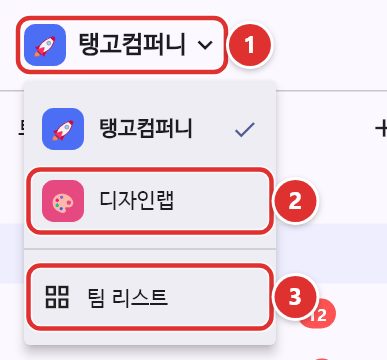
왼쪽 위의 팀 이름을 누릅니다.
옮겨 갈 팀을 누르면 바로 그 팀의 대화방 목록으로 바뀝니다.
팀 리스트를 누르면 처음의 팀 리스트 화면으로 돌아갑니다.
3대화 시작하기
대화방 목록의 각 칸 제목 옆 + 버튼으로 새 대화를 만듭니다. 준회원에게는 그룹채팅·채팅 칸의 + 버튼이 보이지 않고, 토픽 칸의 + 메뉴에는 폴더 생성만 있습니다.
1:1 대화

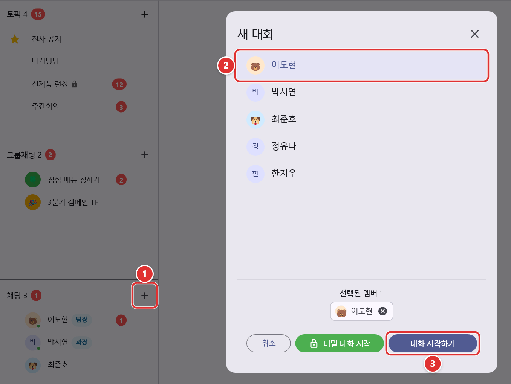
목록의 채팅 칸 옆 +를 누릅니다. 새 대화 창이 뜹니다.
대화할 사람 한 명을 누릅니다. 다시 누르면 선택이 풀립니다.
대화 시작하기를 누르면 1:1 대화방이 열립니다. 전에 대화한 적이 있으면 그 방이 다시 열립니다.
그룹 대화

그룹채팅 칸 옆 +를 누릅니다.
함께할 사람을 두 명 이상 차례로 누릅니다. 고른 사람은 아래 선택된 멤버에 표시되고, ⊗를 누르면 뺄 수 있습니다.
원하면 그룹 이름을 쓰고, 아이콘의 카메라 표시를 눌러 이모지·색·사진을 고릅니다. 이름을 비워 두면 멤버 이름이 방 이름이 됩니다.
대화 시작하기를 누릅니다.
나중에 사람을 더 부르려면 대화방 위쪽의 멤버 초대(사람 모양에 +) 버튼을 누릅니다 (멤버 초대하기).
토픽 만들기
토픽은 주제별 대화방입니다. 새 토픽을 만들면 만든 사람만 들어 있고, 만든 사람이 그 토픽의 토픽 관리자가 됩니다(토픽 관리하기). 공개 토픽이라도 팀원이 저절로 들어오지 않으므로, 만든 뒤 바로 열리는 멤버 초대하기 창에서 함께할 사람을 고르세요.

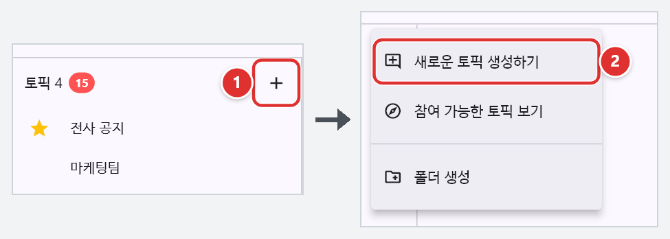

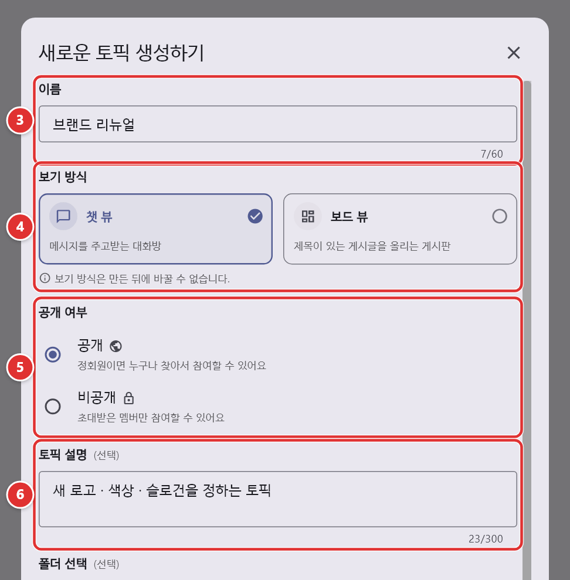
이름: 토픽 이름을 씁니다(60자까지). 칸 아래에 글자 수가 보입니다.
보기 방식: 메시지를 주고받는 챗 뷰와, 제목이 있는 게시글을 올리는 보드 뷰(보드 뷰 토픽) 중에서 고릅니다. 만든 뒤에는 바꿀 수 없습니다.
공개 여부: 공개는 정회원이면 누구나 찾아서 참여할 수 있고, 비공개는 초대받은 멤버만 참여할 수 있습니다. 비공개 토픽은 목록에서 이름 옆에 회색 자물쇠가 붙습니다.
토픽 설명(선택): 어떤 이야기를 나누는 토픽인지 적습니다(300자까지).

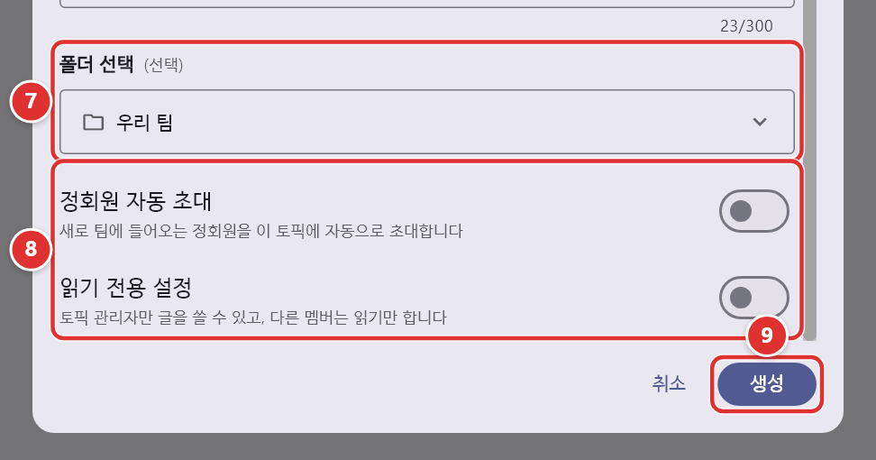
폴더 선택(선택): 내 토픽 폴더를 고르면 새 토픽이 그 폴더에 바로 들어갑니다.
필요하면 스위치를 켭니다. 정회원 자동 초대를 켜면 앞으로 팀에 새로 들어오는 정회원이 이 토픽에 자동으로 초대됩니다(공개 토픽만 — 비공개를 고르면 꺼지고 누를 수 없습니다). 읽기 전용 설정을 켜면 토픽 관리자만 글을 쓰고, 다른 멤버는 읽고 댓글만 달 수 있습니다(읽기 전용 토픽).
생성을 누르면 새 토픽이 열리고, 곧바로 멤버 초대하기 창이 뜹니다(다음 절).
멤버 초대하기
토픽을 만든 직후에는 이 창이 저절로 열립니다. 이미 있는 토픽이나 그룹채팅에 사람을 더 부를 때는 대화방 위쪽의 멤버 초대(사람 모양에 +) 버튼이나, 참여 멤버 창의 멤버 초대하기를 누릅니다. 정회원 이상만 초대할 수 있습니다.

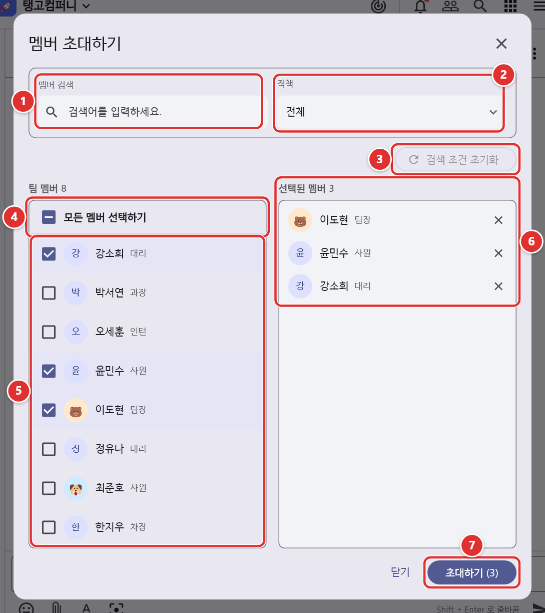
멤버 검색 칸에 이름(또는 아이디)을 쓰면 목록이 좁혀집니다.
직책으로도 좁힐 수 있습니다(전체, 직책별, 직책 없음).
검색 조건 초기화를 누르면 검색어와 직책이 처음 상태로 돌아갑니다.
모든 멤버 선택하기: 지금 목록에 보이는 사람을 한꺼번에 고르거나 풉니다.
왼쪽 팀 멤버에서 초대할 사람을 눌러 체크합니다. 이미 이 방에 있는 사람은 목록에 나오지 않습니다.
고른 사람은 오른쪽 선택된 멤버에 고른 순서대로 모입니다. ✕를 누르면 뺍니다.
초대하기 (N)을 누르면 초대가 끝납니다. 닫기를 누르면 아무도 초대하지 않고 닫힙니다.
참여 가능한 토픽 보기
공개 토픽은 초대를 받지 않아도 직접 찾아 들어갈 수 있습니다. 토픽 칸 옆 + › 참여 가능한 토픽 보기를 누르세요.

토픽 이름이나 설명으로 검색합니다.
찾는 토픽이 없으면 여기서 바로 새로운 토픽 생성하기를 누를 수 있습니다(토픽을 만들 수 있는 사람에게만 보입니다).
참여 가능한 토픽 탭에는 아직 들어가지 않은 공개 토픽이, 참여 중인 토픽 탭에는 내가 들어가 있는 토픽(비공개 포함)이 있습니다. 탭 이름 옆 숫자는 토픽 수입니다.
이름 옆에는 보드 뷰, 읽기 전용, 보관됨, 회색 자물쇠(비공개) 같은 표시가 붙고, 아래 줄에 멤버 수와 토픽 관리자가 보입니다.
참여하기를 누르면 바로 들어가서 그 토픽이 열립니다. 참여하면 이전 메시지도 볼 수 있습니다. 참여 중인 토픽에는 열기 버튼이 있습니다.
비밀 대화
비밀 대화는 내용이 암호화되어 서버도 볼 수 없는 1:1 대화입니다. 목록에 초록색 이름과 🔒 자물쇠로 표시됩니다.
새 대화 창에서 한 사람만 고르고 초록색 🔒 비밀 대화 시작을 누릅니다 (1:1 대화 그림 아래쪽). 프로필 카드의 비밀 대화 시작이나, PC 목록에서 1:1 방을 오른쪽 클릭한 메뉴의 비밀대화 시작하기로도 시작할 수 있습니다.
상대방에게 비밀 대화 요청 창이 뜨고, 상대가 수락하면 대화할 수 있습니다.
4메시지 보내기
글 보내기와 읽음 표시

아래쪽 메시지 입력 칸을 누르고 글을 씁니다.
Enter를 누르거나 보내기(종이비행기 모양)를 누르면 보내집니다. 줄을 바꾸려면 Shift + Enter를 누릅니다. PC 반대로(Shift + Enter로 보내고 Enter로 줄바꿈) 쓰고 싶으면 환경설정 › 메신저 설정의 메시지 전송 옵션 설정을 바꾸세요. 입력칸 아래 오른쪽의 작은 안내(Shift + Enter 로 줄바꿈)가 지금 설정을 알려 줍니다(자리가 좁으면 숨겨집니다).
내 말풍선 옆 주황색 숫자는 아직 읽지 않은 사람 수입니다. 모두 읽으면 숫자가 사라집니다.
파일 · 사진 보내기

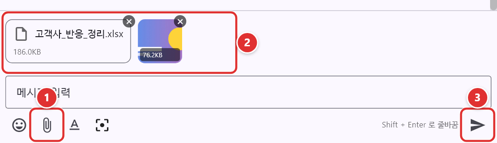
파일 보내기(클립 모양)를 누르고 보낼 파일을 고릅니다. 여러 개를 한꺼번에 골라도 됩니다.
고른 파일이 입력칸 위에 올라오며 바로 전송 준비(업로드)를 시작합니다. 사진은 작은 미리보기로 보입니다. 잘못 골랐으면 오른쪽 위 ✕를 누릅니다. 설명을 같이 보내려면 입력칸에 글을 쓰면 됩니다.
파일 아래 용량만 보이면(준비 끝) 보내기를 누릅니다. 사진 여러 장은 한 말풍선에 모아 보내집니다.
이모티콘 보내기

입력칸 아래 이모티콘(웃는 얼굴)을 누릅니다. 위쪽의 표정 · 손동작 · 동물 · 기타로 종류를 바꿀 수 있습니다.
보낼 이모티콘을 누릅니다.

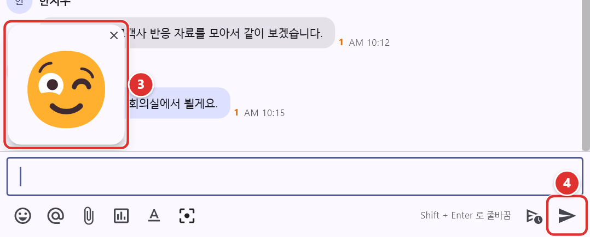
고른 이모티콘이 미리 보입니다. 마음이 바뀌면 ✕를 누릅니다.
Enter 또는 보내기를 누르면 큰 이모티콘이 보내집니다. 글을 함께 쓰면 이모티콘이 먼저, 글이 그다음 메시지로 보내집니다.
글자 꾸미기

입력칸 아래 서식 도구(밑줄 그은 A)를 누르면 입력칸 위에 도구 줄이 펼쳐집니다. 다시 누르면 접힙니다.
꾸밀 글자를 마우스로 끌어 고른 뒤 도구를 누릅니다. 왼쪽부터 굵게 · 기울임 · 밑줄 · 취소선, 링크 · 코드 · 인용, 번호 목록 · 글머리 목록입니다.
Ctrl + B(굵게), Ctrl + I(기울임), Ctrl + U(밑줄)도 됩니다. 비밀 대화에서는 글자 꾸미기를 쓸 수 없습니다.
화면 캡처해서 보내기 PC

입력칸 아래 화면 캡처(네모 속 점) 버튼을 누릅니다.
메신저 창 숨기고 캡처 또는 메신저 창 포함하여 캡처를 고릅니다. 화면이 캡처 모드로 바뀌면 마우스로 찍을 부분을 끌어서 고릅니다. 나타나는 도구로 도형·글·그림을 그려 넣은 뒤 파일 업로드(대화방에 올리기) 또는 저장을 누릅니다.
5메시지 활용하기
메시지 메뉴

메시지 위에 마우스를 올리면 말풍선 아래에 작은 도구 상자(댓글 · ⋮)가 나타납니다.
⋮(더보기)를 누릅니다.
원하는 항목을 고릅니다.
| 항목 | 하는 일 |
|---|---|
| 메시지 공유 | 다른 대화방을 골라 내 글을 쓰고, 그 아래 이 메시지를 인용해서 보냅니다. |
| 복사 | 메시지 글을 복사합니다. |
| 업무로 등록 | 이 메시지 내용으로 새 업무 창을 엽니다(정회원 이상). 프로젝트 이용법 참고. |
| 메시지 전달 | 이 메시지를 그대로 다른 대화방에 보냅니다. 포함을 켜면 원래 보낸 사람과 시각이 같이 표시됩니다. |
| 수정 · 삭제 | 내 메시지에만 보입니다(고치기와 지우기). |
댓글 달기
특정 메시지에 대한 답은 댓글로 달면 대화가 뒤섞이지 않습니다.

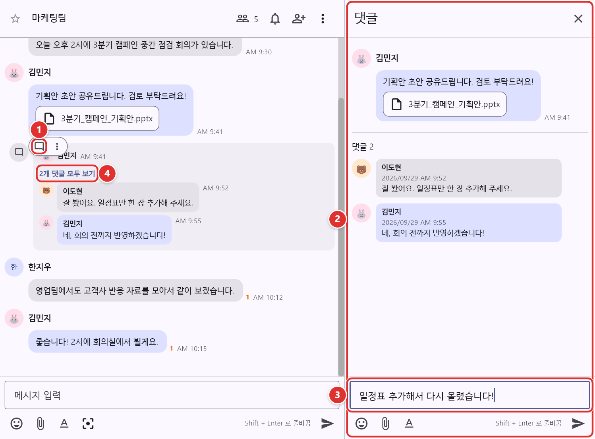
메시지 위에 마우스를 올리고 도구 상자의 댓글(말풍선 모양)을 누릅니다.
오른쪽에 댓글 창이 열리고, 원래 메시지와 지금까지 달린 댓글이 보입니다.
아래 댓글 입력 칸에 쓰고 Enter를 누릅니다. 댓글에도 이모티콘과 파일을 붙일 수 있습니다.
대화 화면에는 댓글이 N개 댓글 모두 보기 묶음으로 나타납니다. 이 묶음을 눌러도 댓글 창이 열립니다.
고치기와 지우기 PC
내 메시지의 ⋮ › 수정을 누르면 말풍선이 입력칸으로 바뀝니다. 고친 뒤 저장을 누릅니다. 고친 메시지에는 (수정됨)이 붙습니다.
⋮ › 삭제를 누르고 확인하면 삭제된 메시지입니다로 바뀝니다. 지운 메시지는 되살릴 수 없습니다.
6알림과 안 읽은 메시지
안 읽은 메시지 수

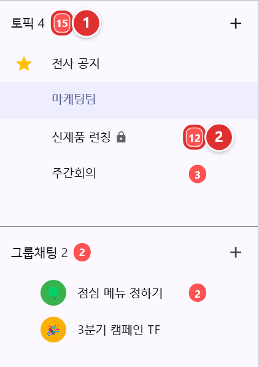
칸 제목 옆 빨간 숫자는 그 칸(토픽·그룹채팅·채팅)의 방들에 쌓인 안 읽은 메시지를 모두 더한 수입니다.
방 이름 옆 빨간 숫자는 그 방의 안 읽은 메시지 수입니다. 방을 열면 사라집니다.
알림 센터

오른쪽 위 알림 센터(종 모양)를 누릅니다. 빨간 점이 있으면 안 읽은 메시지가 있다는 뜻입니다.
안 읽은 메시지가 있는 방이 최근 순으로 모여 있습니다. 방을 누르면 바로 열립니다.
왼쪽에 팀 아이콘과 이름이 있어 다른 팀의 방도 구분됩니다. 다른 팀 방을 누르면 그 팀으로 옮겨 가며 방이 열립니다. 안 읽은 공지가 있는 토픽은 📢 표시와 함께 공지 내용이 보입니다.
PC 알림과 창 닫기 PC
- 새 메시지가 오면 화면 오른쪽 아래에 Windows 알림이 뜨고, 작업 표시줄의 TangoTalk 아이콘이 깜빡입니다. 알림을 누르면 그 대화방이 열립니다. 지금 보고 있는 대화방의 메시지는 알림이 뜨지 않습니다.
- 창의 ✕를 눌러도 TangoTalk은 꺼지지 않고, 작업 표시줄 오른쪽 아래(알림 영역)의 아이콘으로 숨어서 계속 알림을 받습니다. 아이콘을 누르면 창이 다시 열립니다.
- 완전히 끄려면 그 아이콘을 오른쪽 클릭하고 완전히 종료를 누릅니다.
- 특정 방의 알림만 끄려면 대화방 위쪽의 종 모양 버튼(대화방 위쪽 버튼)이나 목록의 오른쪽 클릭 메뉴(대화방 알림 끄기)를 쓰세요. 알림 내용을 숨기려면 환경설정 › 메신저 설정의 메시지 내용 미리보기를 바꿉니다.
7대화방 정리하기
목록에서 오른쪽 클릭 PC

목록에서 대화방 이름을 마우스 오른쪽 버튼으로 누릅니다. 마우스를 올리기만 해도 이름 앞에 회색 ☆, 오른쪽 끝에 ✕가 나타납니다.
메뉴에서 원하는 일을 고릅니다.
| 항목 | 하는 일 |
|---|---|
| 대화창 분할하기 | 이 방을 지금 열린 대화 오른쪽에 하나 더 엽니다. 두 방을 나란히 볼 수 있습니다(창이 넓을 때). 분할 창 위의 ✕로 닫습니다. |
| 비밀대화 시작하기 | 1:1 방에만 보입니다. 그 사람과 비밀 대화를 시작합니다. |
| 대화방 알림 끄기 | 이 방의 새 메시지 알림을 끕니다. 안 읽은 숫자는 계속 보이고, 방 이름 옆에 🔕 모양이 붙습니다. 다시 누르면 대화방 알림 켜기입니다. |
| 이름 변경 | 그룹채팅 방 이름을 나에게만 다르게 보이게 바꿉니다. 비우고 저장하면 원래 이름으로 돌아갑니다. |
| 모두 읽음 처리 | 방을 열지 않고 안 읽은 표시를 지웁니다. |
| 폴더로 이동 › | 토픽에만 보입니다. 오른쪽에 내 폴더 목록이 열리고, 고른 폴더로 토픽을 옮깁니다(토픽 폴더). |
| 폴더에서 빼기 | 폴더에 들어 있는 토픽에만 보입니다. 폴더 밖 목록으로 꺼냅니다. |
| 숨기기 | 1:1 방에만 보입니다. 목록에서 숨깁니다. 상대가 새 메시지를 보내거나 다시 대화를 시작하면 예전 내용과 함께 돌아옵니다. |
| 나가기 | 대화방에서 나갑니다. 1:1 방에서 나가기에 체크하고 나가면, 다시 대화해도 예전 내용이 보이지 않습니다. 토픽의 마지막 토픽 관리자는 바로 나갈 수 없습니다(나가기 규칙). |
즐겨찾기: 방 이름 앞의 ☆를 누르면 노란 ★이 되고, 그 방이 칸의 맨 위로 올라갑니다. 대화방 위쪽 이름 옆의 ☆로도 켜고 끌 수 있습니다.
대화방 위쪽 버튼과 ⋮ 메뉴
열린 대화방의 맨 위 줄에는 방 이름과 함께 자주 쓰는 버튼이 있습니다. 토픽이면 이름 옆에 회색 자물쇠(비공개)와 보드 뷰 · 읽기 전용 · 보관됨 표시가 붙기도 합니다.

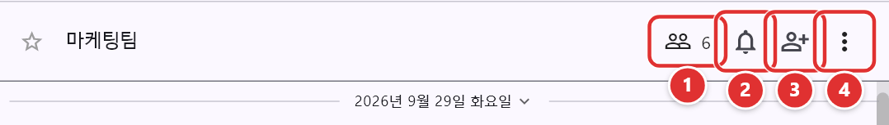
멤버 N(사람 모양과 숫자): 이 방의 멤버 수입니다. 누르면 멤버 목록이 열립니다 — 토픽은 참여 멤버 창입니다. 1:1 채팅에는 없습니다.
종 모양: 이 방의 알림을 끄거나 켭니다. 끄면 종에 빗금이 생기고, 목록의 방 이름 옆에 🔕 모양이 붙습니다.
멤버 초대(사람 모양에 +): 멤버 초대하기 창을 엽니다(정회원 이상, 1:1 채팅 제외).
⋮(더보기)를 누르면 메뉴가 열립니다.

메뉴에서 고릅니다. 방 종류와 내 권한에 따라 보이는 항목이 조금 다릅니다.
| 항목 | 하는 일 |
|---|---|
| 공지 | 토픽에만 있습니다. 공지 목록을 엽니다(공지). |
| 파일 보기 | 이 방에서 주고받은 파일만 오른쪽에 모아 봅니다(파일 모아 보기). |
| 링크 보기 | 이 방에서 주고받은 링크만 모아 봅니다(링크 모아 보기). |
| 자동 삭제 타이머 | 비밀 대화에만 있습니다(비밀 대화에는 파일 보기 · 링크 보기 · 대화 내보내기가 없습니다). |
| 대화 내보내기 | 대화 내용을 엑셀 파일(.xlsx)로 받습니다. 기간을 고르지 않으면 전체 대화를 받습니다. |
| 정보 변경하기 | 토픽의 토픽 관리자와 팀 관리자에게만 보입니다(토픽 정보 변경하기). |
| 토픽 나가기 · 채팅방 나가기 · 채팅방 숨기기 | 방에서 나가거나(1:1은) 목록에서 숨깁니다. |
토픽 폴더
토픽이 많으면 내 폴더로 묶어 둘 수 있습니다. 폴더는 나에게만 보이는 정리 도구라서 다른 사람의 목록에는 아무 영향이 없고, 팀마다 따로 만듭니다. 새 폴더는 토픽 칸 옆 + › 폴더 생성을 누르고, 이름(30자까지)을 쓴 뒤 생성을 누르면 생깁니다. 휴대폰에서는 토픽 탭과 폴더를 보세요.
폴더 보기와 폴더 메뉴

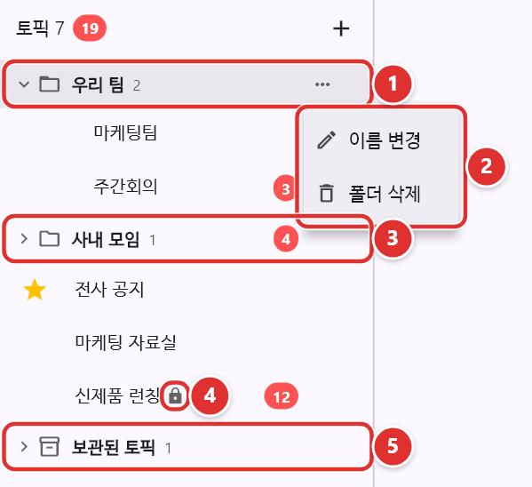
폴더 머리글을 누르면 접히고 펼쳐집니다. 폴더 안의 토픽은 한 칸 들여 써져 있습니다.
머리글에 마우스를 올리면 오른쪽에 ⋯가 나타납니다. 이름 변경 · 폴더 삭제를 고릅니다. 폴더를 지워도 안의 토픽은 목록에 그대로 남습니다.
접어 둔 폴더에는 안에 든 토픽들의 안 읽은 메시지 수를 더한 빨간 숫자가 붙습니다.
이름 옆 회색 자물쇠는 비공개 토픽이라는 뜻입니다.
보관한 토픽은 맨 아래 보관된 토픽 묶음에만 모입니다. 눌러서 펼쳐 봅니다.
끌어다 놓아 폴더에 넣기

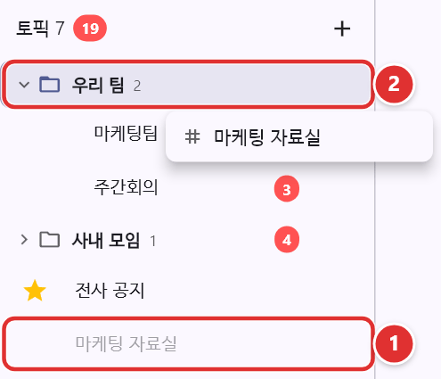
폴더에 넣을 토픽을 마우스로 누른 채 끕니다. 제자리의 토픽은 흐리게 보이고, 마우스 옆에 토픽 이름이 따라다닙니다.
폴더 머리글 위로 가져가 색이 바뀌면 놓습니다.
폴더에서 빼려면 폴더 안의 토픽을 맨 위 토픽 N 머리글로 끌어다 놓습니다. 폴더 머리글끼리 끌어다 놓으면 폴더 순서가 바뀝니다.
오른쪽 클릭 메뉴로 옮기기

토픽을 마우스 오른쪽 버튼으로 누릅니다.
폴더로 이동을 누릅니다.
오른쪽에 내 폴더 목록이 열립니다(지금 들어 있는 폴더는 ✓ 표시로 흐리게). 옮길 폴더를 누르거나, 새 폴더…를 눌러 이름을 정하면 새 폴더를 만들면서 바로 넣습니다.
폴더 안의 토픽이면 폴더에서 빼기로 폴더 밖 목록에 꺼냅니다.
8검색과 파일
메시지 검색

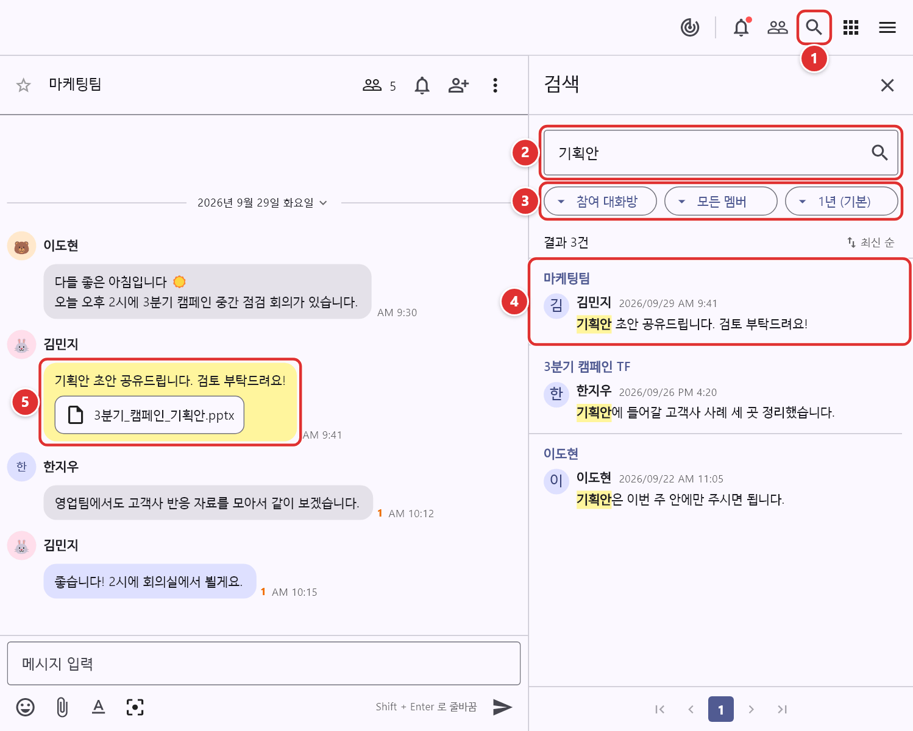
오른쪽 위 검색(돋보기)을 누르면 오른쪽에 검색 창이 열립니다.
찾을 낱말을 쓰고 Enter를 누릅니다. 지금 팀에서 내가 들어가 있는 모든 방을 찾습니다.
결과가 많으면 대화방, 보낸 사람, 기간(기본 1년, 직접 설정 가능)으로 좁힙니다. 결과 N건 오른쪽에서 최신 순·과거 순을 바꿀 수 있습니다.
결과를 누릅니다. 찾는 낱말은 노란색으로 칠해져 있습니다.
왼쪽 대화 화면이 그 메시지로 이동하고, 잠깐 노랗게 표시됩니다.
파일 모아 보기

오른쪽 위 메뉴(점 아홉 개)를 누르고 파일을 고릅니다.
대화방, 보낸 사람, 파일 종류(이미지 · PDF · 문서 · 엑셀 · 파워포인트 · 압축 파일 · 오디오)로 거를 수 있습니다. 대화방을 연 상태에서 열면 처음에는 그 방의 파일만 보입니다(대화방 ⋮ › 파일 보기로 열어도 같습니다).
파일을 누르면 창 안에서 미리 볼 수 있습니다. 마우스를 올리면 나타나는 ☆로 즐겨찾기하면 목록 맨 위에 모입니다.
링크 모아 보기
대화에서 주고받은 인터넷 주소(링크)도 한곳에 모아 볼 수 있습니다. 오른쪽 위 메뉴(점 아홉 개) › 링크를 누르거나, 대화방 ⋮ › 링크 보기를 누르세요(그 방의 링크만).
- 줄마다 초록색 대화방 이름, 미리보기 그림, 제목(없으면 사이트 이름), 파란 링크 주소가 보입니다. 파란 주소를 누르면 링크가 열리고, 그림이나 제목을 누르면 그 링크를 보낸 메시지로 이동합니다.
- 위쪽 대화방 칸으로 거를 수 있습니다.
- 줄에 마우스를 올리면 대화방에서 보기와 링크 복사 버튼이 나타납니다(휴대폰은 길게 누릅니다).
날짜로 이동
대화 중간에 있는 날짜 줄(예: 2026년 9월 29일 화요일 ⌄)을 누르면 달력이 열립니다. 날짜를 고르면 그날의 대화로 바로 이동합니다. 대화를 위로 스크롤할 때 위쪽에 잠깐 뜨는 날짜를 눌러도 됩니다. 위로 많이 올라가 있을 때는 오른쪽 아래 ⌄ 버튼으로 맨 아래(최신)로 돌아옵니다.
9공지
토픽에는 모두가 꼭 봐야 할 내용을 공지로 올릴 수 있습니다. 가장 최근 공지가 대화방 맨 위에 고정됩니다.
공지 보기

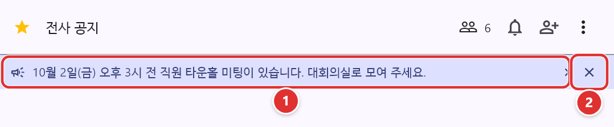
대화방 위쪽의 📢 공지 띠를 누르면 공지 목록이 열립니다. 공지를 누르면 전체 내용과 댓글을 볼 수 있습니다.
공지를 다 읽었으면 오른쪽 ✕로 띠를 닫습니다. 나에게만 닫히고, 새 공지가 올라오면 다시 나타납니다.
공지 쓰기

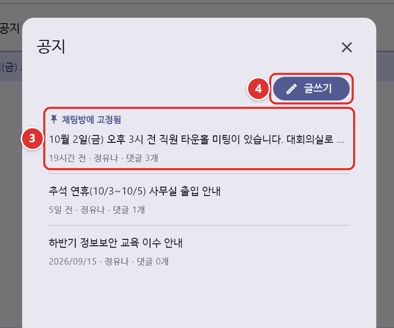
목록 맨 위 📌 채팅방에 고정됨 표시가 있는 공지가 지금 대화방 위에 걸린 공지입니다.
새 공지를 쓰려면 글쓰기를 누르고, 내용을 쓴 뒤 완료를 누릅니다. 공지 자동 내리기(1시간 ~ 30일, 또는 직접 지정)를 고르면 그 시간이 지나 위쪽 고정이 저절로 풀립니다.
대화방 ⋮ 메뉴의 공지로도 공지 목록을 열 수 있습니다.
10토픽 관리하기
토픽마다 그 토픽을 맡아 관리하는 토픽 관리자가 있습니다. 토픽을 만든 사람이 처음 토픽 관리자가 되고, 정회원 이상 멤버를 여러 명 토픽 관리자로 정할 수 있습니다. 팀 소유자와 관리자(팀 관리자)도 자기가 들어가 있는 토픽을 토픽 관리자처럼 관리할 수 있습니다. 이 장의 정보 변경 · 보관 · 삭제 · 멤버 내보내기 · 토픽 관리자 지정은 토픽 관리자와 팀 관리자에게만 보입니다.
참여 멤버
대화방 위쪽의 멤버 N(사람 모양과 숫자, 대화방 위쪽 버튼의 1)을 누르면 이 토픽의 참여 멤버 창이 열립니다.

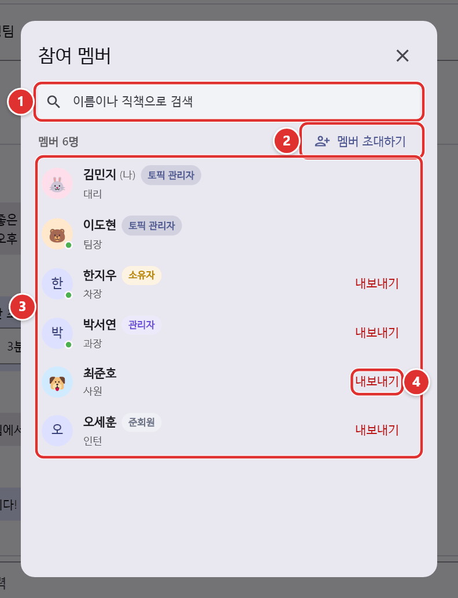
이름이나 직책으로 찾습니다.
멤버 초대하기: 멤버 초대하기 창이 열립니다(정회원 이상).
목록은 나 → 토픽 관리자 → 소유자 → 관리자 → 정회원 → 준회원 순서이고, 이름 옆 배지로 구분합니다(정회원은 배지가 없습니다). 사진 옆 초록 점은 지금 접속 중이라는 뜻이고, 이름을 누르면 프로필 카드가 뜹니다.
토픽 관리자와 팀 관리자에게는 내보낼 수 있는 멤버 옆에 내보내기가 보입니다. 확인 창에서 내보내기를 누르면 그 사람은 이 토픽을 더 볼 수 없습니다(공개 토픽이면 다시 찾아서 참여할 수 있습니다). 토픽 관리자는 다른 토픽 관리자를 내보낼 수 없습니다(팀 관리자는 할 수 있습니다).
토픽 정보 변경하기
대화방 ⋮ › 정보 변경하기를 누릅니다(토픽 관리자와 팀 관리자에게만 보입니다). 창에는 토픽 설정과 토픽 멤버 관리 두 탭이 있습니다.

위쪽 탭에서 토픽 설정(이 그림)과 토픽 멤버 관리(아래)를 고릅니다.
이름과 토픽 설명을 고칩니다.
보기 방식(챗 뷰 · 보드 뷰)은 보여 주기만 합니다. 만든 뒤에는 바꿀 수 없습니다.
공개 여부: 공개로 바꾸면 정회원 누구나 찾아서 참여할 수 있고, 참여하면 이전 메시지도 볼 수 있습니다. 비공개로 바꾸면 그 뒤로는 초대받은 멤버만 참여할 수 있고, 지금 멤버는 그대로 남습니다(정회원 자동 초대도 꺼집니다).

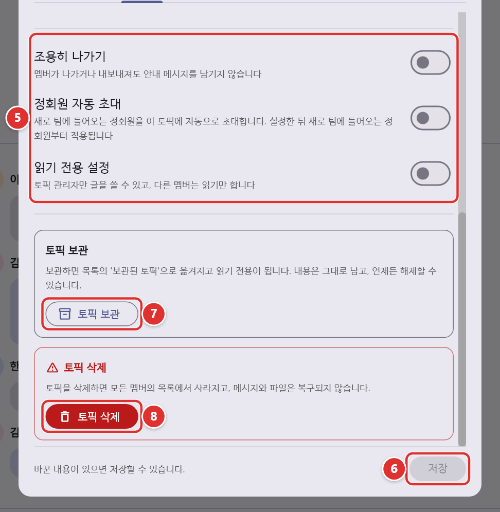
필요한 설정을 켜거나 끕니다(아래 표).
저장을 누르면 바꾼 내용이 적용됩니다. 바꾼 것이 없으면 누를 수 없고, 저장하지 않은 변경이 있으면 왼쪽에 저장하지 않은 변경 사항이 있습니다.라고 나옵니다. 바꾼 항목마다 대화방에 안내 메시지가 남습니다.
토픽 보관: 다 끝난 토픽을 치워 둡니다. 확인 창에서 보관을 누르면 목록 맨 아래 보관된 토픽으로 옮겨지고, 이름 옆에 보관됨 표시가 붙으며 토픽 관리자만 글을 쓸 수 있게 됩니다. 메시지와 파일은 그대로 남고, 같은 자리의 보관 해제로 언제든 되돌립니다.
토픽 삭제: 확인 창에 토픽 이름을 그대로 입력해야 삭제 버튼이 눌립니다.
| 설정 | 켜면 |
|---|---|
| 조용히 나가기 | 멤버가 나가거나 내보내져도 "OOO 님이 나갔습니다" 같은 안내 메시지를 남기지 않습니다. 보드 뷰 토픽은 처음부터 켜져 있습니다. |
| 정회원 자동 초대 | 켠 뒤에 팀에 새로 들어오는 정회원을 이 토픽에 자동으로 초대합니다. 공개 토픽에서만 켤 수 있습니다. |
| 읽기 전용 설정 | 토픽 관리자와 팀 관리자만 메시지 · 게시글 · 공지를 쓸 수 있고, 다른 멤버는 읽고 댓글만 달 수 있습니다(아래). |
토픽 관리자 지정 · 멤버 내보내기

토픽 정보 변경하기 창에서 토픽 멤버 관리 탭을 누릅니다.
토픽 관리자 지정과 멤버 내보내기 중에서 고릅니다. 위쪽 칸에서 이름이나 직책으로 찾을 수 있습니다.
토픽 관리자 지정: 체크한 사람이 토픽 관리자가 됩니다. 목록에는 정회원 이상만 나옵니다(준회원은 토픽 관리자가 될 수 없습니다). 멤버 내보내기: 내보낼 사람을 체크합니다(모든 멤버 선택으로 한꺼번에).
저장(멤버 내보내기는 빨간 내보내기)을 누릅니다. 토픽 관리자는 한 명 이상이어야 하고, 나를 빼면 저장한 뒤 이 토픽을 관리할 수 없다고 미리 알려 줍니다(팀 관리자는 계속 관리할 수 있습니다).
읽기 전용 · 보관된 토픽

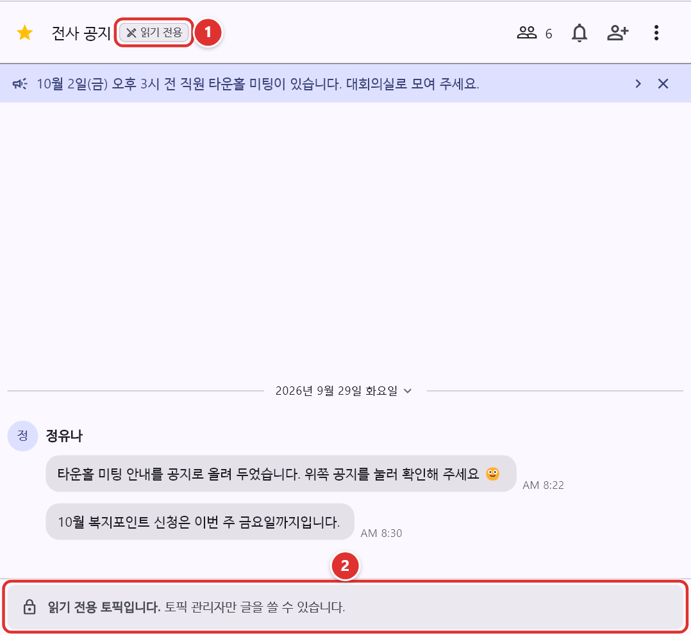
토픽 이름 옆에 읽기 전용 표시가 붙습니다(보관된 토픽은 보관됨).
글을 쓸 수 없는 멤버에게는 입력칸 대신 읽기 전용 토픽입니다. 토픽 관리자만 글을 쓸 수 있습니다.가 보입니다 (보관된 토픽은 보관된 토픽입니다.).
- 이런 토픽에서도 메시지와 게시글에 댓글은 누구나 달 수 있습니다.
- 토픽 관리자와 팀 관리자는 평소처럼 쓸 수 있고, 입력칸 위에 읽기 전용 토픽 — 토픽 관리자만 글을 쓸 수 있어요가 작게 보입니다.
- 글을 쓸 수 없는 토픽은 메시지 공유 · 전달할 대화방 목록에도 나오지 않습니다.
- 보관된 토픽은 목록 맨 아래 보관된 토픽 묶음에만 보이고, 토픽 관리자가 보관 해제하면 원래 자리로 돌아옵니다.
누가 무엇을 할 수 있나요
| 할 일 | 할 수 있는 사람 |
|---|---|
| 새 토픽 만들기 | 정회원 이상(팀 설정에 따라 관리자 이상, 소유자, 지정된 사람만일 수 있습니다) |
| 공개 토픽 찾아서 참여하기 | 정회원 이상 |
| 멤버 초대 | 그 토픽의 정회원 이상 멤버 |
| 메시지 · 게시글 쓰기 | 멤버 누구나 — 읽기 전용 · 보관된 토픽은 토픽 관리자와 팀 관리자만 |
| 공지 쓰기 | 토픽을 만들 수 있는 사람과 토픽 관리자 · 팀 관리자 — 읽기 전용 · 보관된 토픽은 토픽 관리자와 팀 관리자만 |
| 댓글 달기 | 멤버 누구나(읽기 전용 · 보관된 토픽도) |
| 정보 변경 · 보관 · 삭제 · 멤버 내보내기 · 토픽 관리자 지정 · 게시글 고정 | 토픽 관리자, 팀 관리자(소유자 · 관리자) |
11보드 뷰 토픽
보드 뷰로 만든 토픽은 채팅 대신 제목이 있는 게시글을 올리는 게시판입니다. 공지 · 회의록 · 자료처럼 오래 두고 볼 글에 좋고, 새 게시글이 맨 위에 옵니다. 보기 방식은 토픽을 만들 때만 고를 수 있습니다.
보드 화면

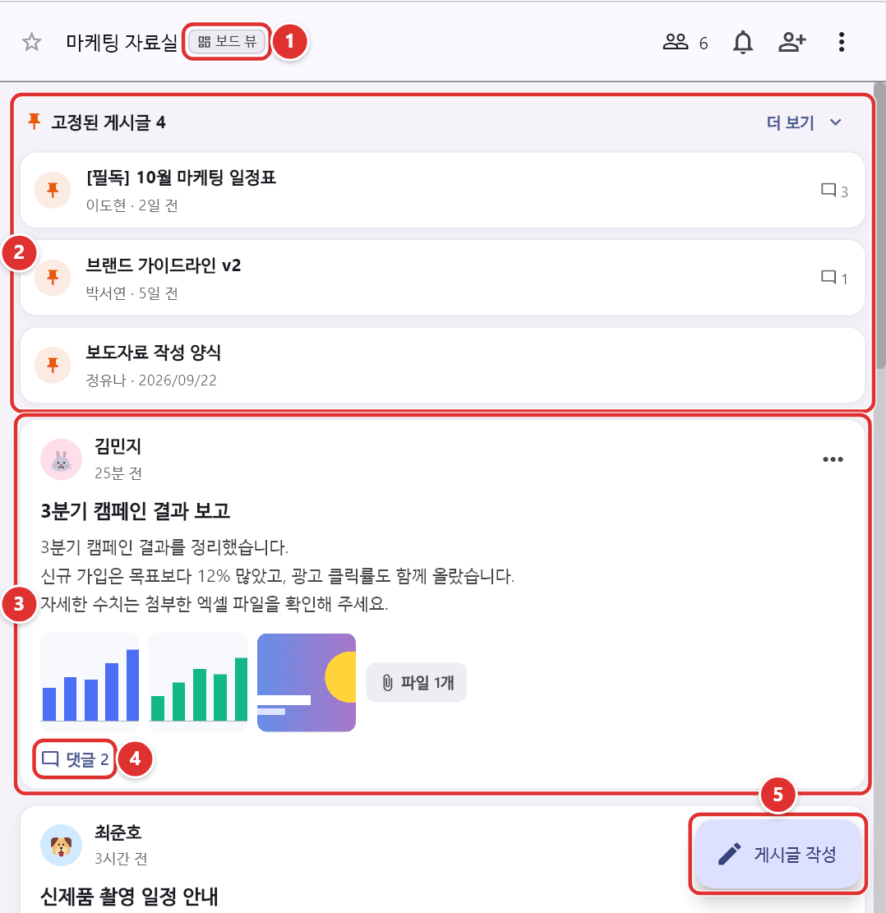
토픽 이름 옆에 보드 뷰 표시가 붙습니다.
고정된 게시글: 중요한 글은 맨 위에 모입니다. 세 개까지 보이고, 더 있으면 더 보기로 펼칩니다.
게시글 카드: 쓴 사람, 올린 때(예: 25분 전, 고친 글은 (수정됨)), 제목, 본문 앞부분, 첨부(사진은 네 장까지 작게, 파일은 "파일 N개")가 보입니다. 카드를 누르면 게시글이 열립니다.
댓글 N: 달린 댓글 수입니다. 댓글이 있으면 파란색입니다.
게시글 작성(연필): 오른쪽 아래에 있습니다. 창이 좁으면 연필 모양 동그란 버튼만 보입니다.
아래로 내리면 예전 게시글을 더 불러옵니다. 위로 올려 둔 채 다른 사람이 새 글을 올리면 새 게시글이 있습니다 알림이 뜨고, 누르면 맨 위로 갑니다. PC 보드에 파일을 끌어다 놓으면 그 파일을 붙인 채로 게시글 작성 창이 열립니다.
게시글 쓰기

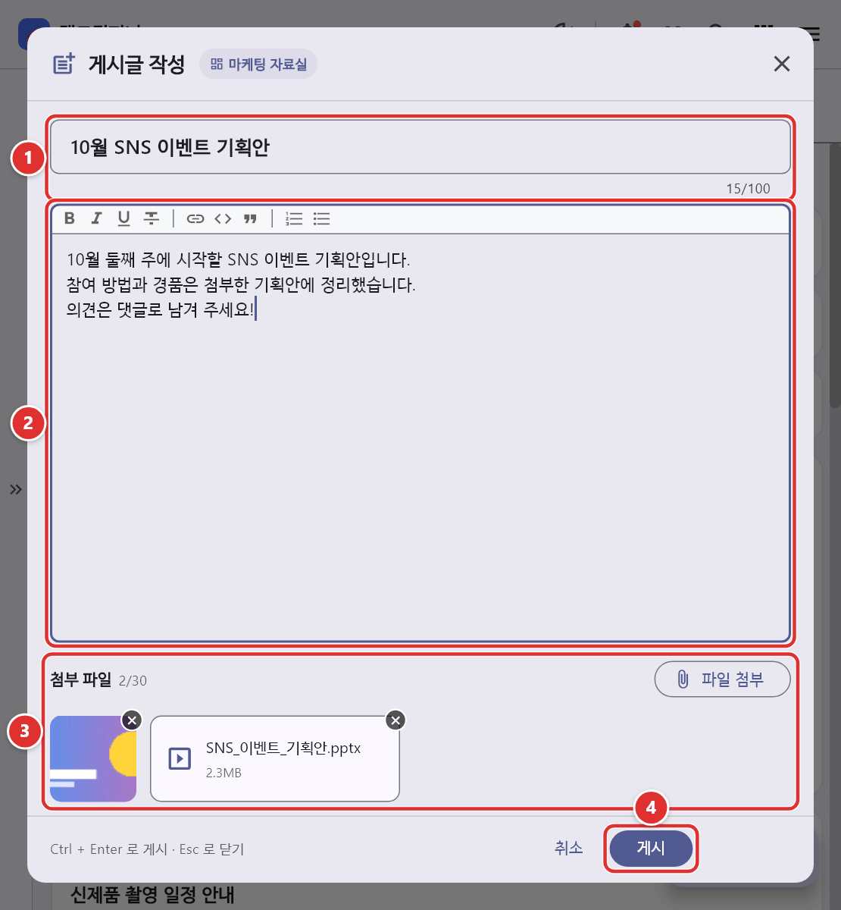
제목을 씁니다(100자까지, 꼭 써야 합니다).
본문을 씁니다(꼭 써야 합니다). 위쪽 서식 도구로 굵게 · 기울임 · 밑줄 · 취소선 · 링크 · 코드 · 인용 · 목록을 넣을 수 있습니다.
파일 첨부로 사진과 파일을 30개까지 붙입니다. PC 이 창에 파일을 끌어다 놓거나 복사한 그림을 Ctrl + V로 붙여 넣어도 됩니다. 붙이자마자 올라가기 시작하고, 오른쪽 위 ✕로 뺍니다.
게시를 누르면 보드 맨 위에 올라갑니다(Ctrl + Enter도 됩니다). 취소나 Esc로 닫을 때 쓰던 내용이 있으면 버릴지 한 번 더 묻습니다.
고정 · 수정 · 삭제

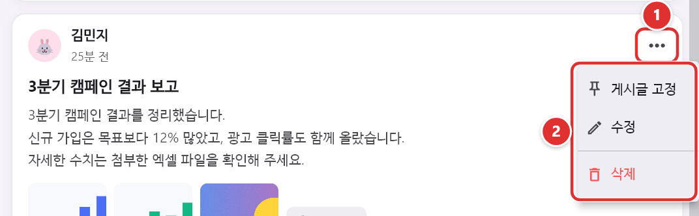
게시글 오른쪽 위의 ⋯(더보기)를 누릅니다. 할 수 있는 일이 없으면 이 버튼이 보이지 않습니다.
원하는 항목을 고릅니다.
| 항목 | 하는 일 | 할 수 있는 사람 |
|---|---|---|
| 게시글 고정 / 게시글 고정 해제 | 맨 위 고정된 게시글에 올리거나 내립니다. 고정한 글은 이름 옆에 📌 고정 표시가 붙습니다. | 토픽 관리자, 팀 관리자 |
| 수정 | 제목과 본문을 고칩니다(첨부는 바꿀 수 없습니다). 게시글은 고칠 수 있는 시간 제한이 없습니다. | 쓴 사람 |
| 삭제 | 확인한 뒤 지웁니다. | 쓴 사람, 토픽 관리자, 팀 관리자 |
팀에서 메시지 수정 · 삭제를 꺼 두었으면 게시글도 고치거나 지울 수 없습니다. 읽기 전용 · 보관된 보드에서는 쓴 사람이라도 토픽 관리자가 아니면 고칠 수 없습니다(지우기는 할 수 있습니다).
게시글 보기와 댓글

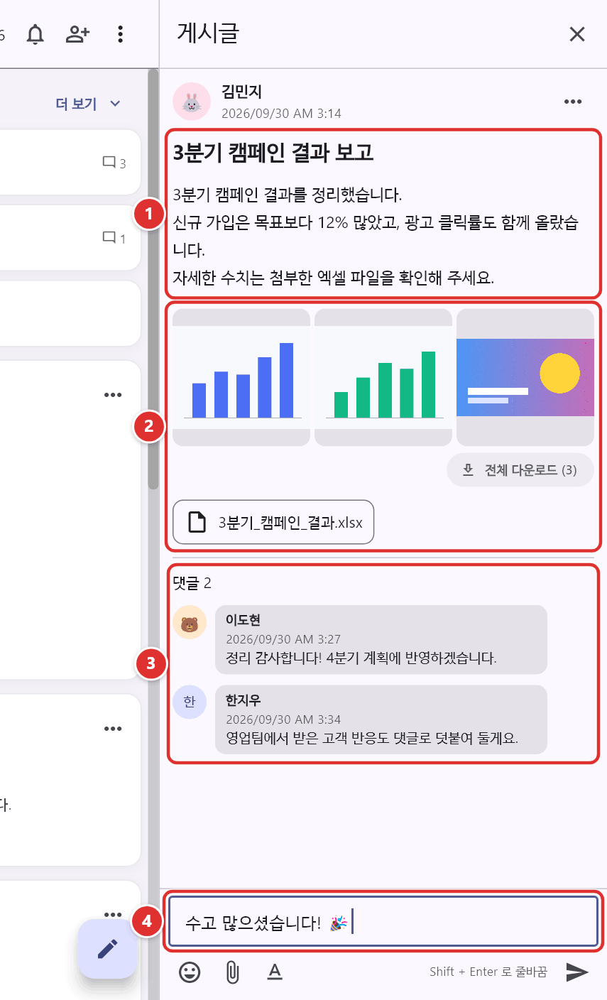
게시글 카드를 누르면 PC는 오른쪽에 게시글 창이, 휴대폰은 새 화면이 열립니다. 제목과 본문 전체를 볼 수 있습니다. 쓴 사람 옆 ⋯는 카드의 메뉴와 같습니다.
사진은 누르면 크게 보이고, 파일은 눌러서 열거나 내려받습니다. 여러 개면 전체 다운로드 (N)으로 한꺼번에 받습니다.
아래에 댓글이 모입니다.
댓글 입력칸에 쓰고 Enter를 누르면 댓글이 달립니다. 이모티콘과 파일도 붙일 수 있습니다.
12동료와 내 프로필
동료 찾기와 프로필

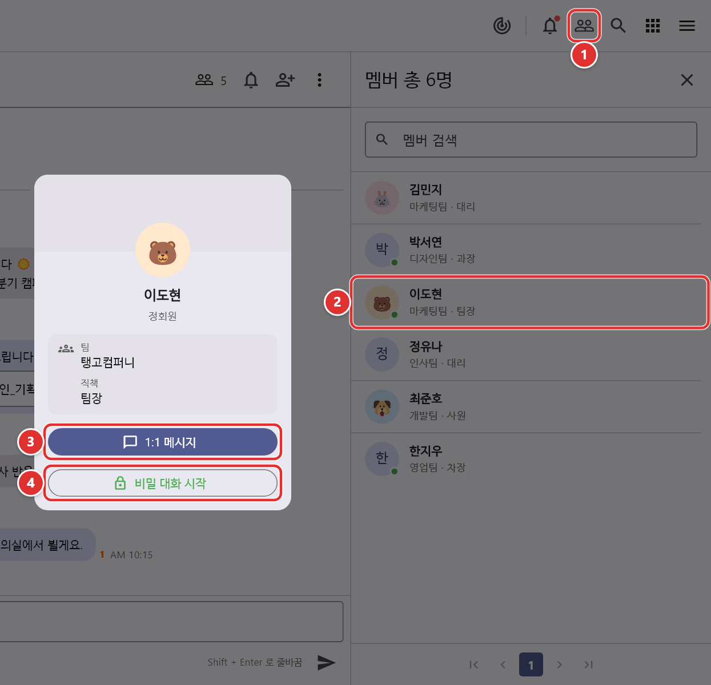
창 맨 위 줄 오른쪽의 멤버(사람 두 명)를 누르면 이 팀의 멤버 목록이 열립니다. 위쪽 칸에 이름을 쳐서 찾을 수 있습니다. 사진 옆 초록 점은 지금 접속 중이라는 뜻입니다. (대화방 위쪽의 멤버 N은 그 방의 멤버만 보여 줍니다 — 참여 멤버.)
동료 이름을 누르면 프로필 카드가 뜹니다. 등급, 팀, 직책을 볼 수 있습니다.
1:1 메시지를 누르면 그 사람과의 대화방이 열립니다.
비밀 대화 시작을 누르면 비밀 대화를 요청합니다.
대화 속 동료의 사진이나 이름을 눌러도 같은 프로필 카드가 뜹니다.
내 프로필 바꾸기

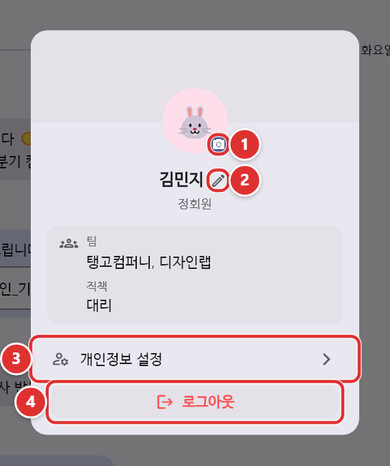
사진(카메라 표시)을 누르면 캐릭터 선택하기, 사진 올리기, 초기화로 프로필 사진을 바꿀 수 있습니다.
이름 옆 연필을 누르면 이름을 바꿉니다.
개인정보 설정에서 비밀번호를 한 번 더 확인한 뒤 이메일, 비밀번호를 바꾸거나 회원 탈퇴를 할 수 있습니다.
로그아웃으로 로그인 화면으로 나갑니다.
직책은 스스로 바꿀 수 없습니다. 바꿔야 하면 팀 소유자나 관리자에게 요청하세요.
조직도 · 팀장 문의 · 화상회의
- 조직도 관리자 — 팀 리스트 화면 오른쪽 위의 조직도 버튼으로 서버 전체의 팀과 회원을 팀 · 멤버 탭으로 볼 수 있습니다. 관리자 이상에게만 보입니다.
- 팀장에게 문의하기 — 1:1 대화 상대가 우리 팀의 팀장이면 입력칸 아래에 팀장에게 문의하기 버튼이 생깁니다. 분류(업무 · 근태/휴가 · 불편사항 · 기타), 제목, 내용을 쓰고 보내기를 누릅니다. 보낸 문의와 처리 상태는 오른쪽 위 메뉴 › 문의함의 보낸 문의에서 보고, 팀장은 받은 문의에서 확인하고 처리 상태를 바꿉니다.
- 화상회의 — 서버에 화상회의가 설정되어 있으면 입력칸 아래에 캠코더 모양 화상회의 시작 버튼이 보입니다. 누군가 회의를 시작하면 화상회의 요청 창이 떠서 참여 또는 거절을 고를 수 있습니다.
13환경설정
☰ › 환경설정을 누르면 환경설정 창이 열립니다. 왼쪽에서 메신저 설정과 시스템 설정 중 하나를 고르면 오른쪽에 그 항목들이 보입니다(휴대폰은 위쪽 탭). 바꾼 뒤에는 꼭 저장하기를 눌러야 적용됩니다.
메신저 설정

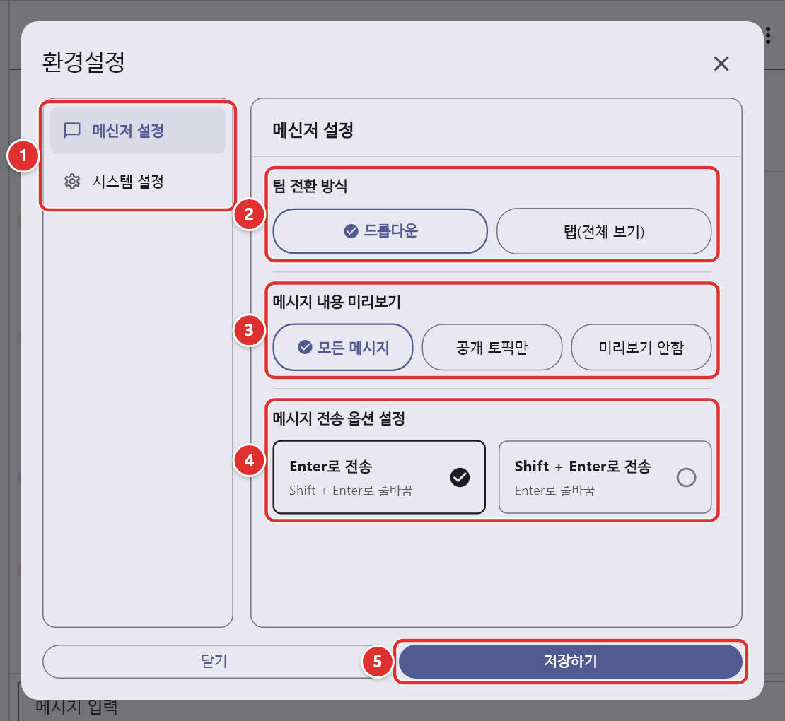
왼쪽에서 메신저 설정 또는 시스템 설정을 고릅니다.
팀 전환 방식: 왼쪽 위 팀 이름을 드롭다운으로 보일지, 모든 팀을 탭(전체 보기)으로 늘어놓을지 고릅니다(다른 팀으로 옮기기).
메시지 내용 미리보기: 알림에 메시지 내용을 어디까지 보여 줄지 고릅니다 — 모든 메시지 · 공개 토픽만 · 미리보기 안함. 미리보기 안함이면 알림에 새 메시지가 있습니다만 나옵니다.
메시지 전송 옵션 설정 PC: Enter로 전송(Shift + Enter로 줄바꿈, 처음 설정)과 Shift + Enter로 전송(Enter로 줄바꿈) 중에서 고릅니다.
다 고쳤으면 저장하기를 누릅니다. 닫기(또는 ✕)를 누르면 바꾼 내용이 적용되지 않습니다.
시스템 설정

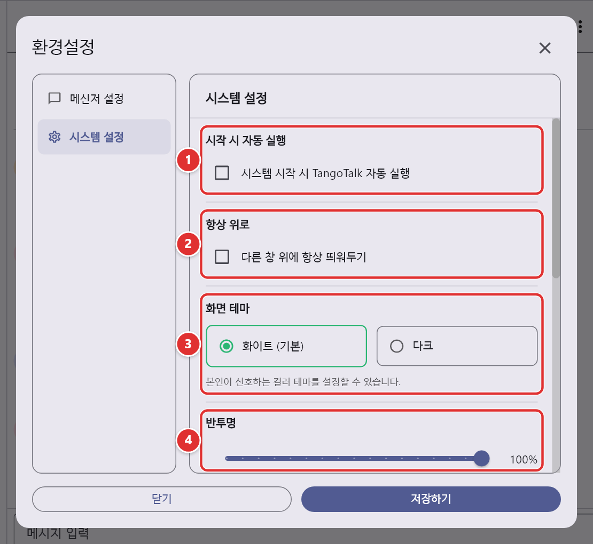

| 번호 | 항목 | 설명 |
|---|---|---|
| 1 | 시작 시 자동 실행 PC | 컴퓨터를 켜면 TangoTalk이 저절로 실행됩니다. |
| 2 | 항상 위로 PC | TangoTalk 창이 다른 창에 가려지지 않고 늘 위에 떠 있습니다. |
| 3 | 화면 테마 | 밝은 화이트 (기본)와 어두운 다크 중에서 고릅니다. |
| 4 | 반투명 PC | 막대를 움직여 창을 20~100% 사이로 비치게 합니다. 움직이는 동안 바로 보이고, 저장하지 않고 닫으면 원래대로 돌아갑니다. |
| 5 | 파일 다운로드 | 저장할 때마다 위치를 묻지 않고 아래 폴더에 바로 받을지 정하고(체크), 받을 폴더를 고릅니다. 다운로드 완료 시 폴더를 열지, 아무것도 하지 않을지도 고릅니다. 휴대폰은 늘 Download/TangoTalk 폴더에 저장합니다. |
| 6 | 자동 잠금 PC | PC가 절전 모드에 들어가거나 화면이 꺼지면 메신저를 잠급니다. 다시 열 때 로그인 비밀번호를 넣어야 풀립니다. |
| 버전 정보 | 맨 아래에 지금 쓰는 앱의 버전이 있습니다. 새 버전이 있으면 함께 표시됩니다. |
14안드로이드 휴대폰에서
휴대폰에서도 같은 계정으로 대화할 수 있습니다. 기능은 대부분 같고, 화면 배치만 조금 다릅니다.
첫 화면 안드로이드

| 번호 | 하는 일 |
|---|---|
| 1 | 팀 이름 — 눌러서 다른 팀으로 옮깁니다. |
| 2 | 알림 센터 — 안 읽은 방을 모아 봅니다. |
| 3 | 메뉴 — 파일, 링크, 문의함. |
| 4 | 내 메뉴(☰) — 내 프로필, 환경설정, 도움말, 로그아웃. |
| 5 | 검색창 — 누르면 검색 화면으로 갑니다. |
| 6 | + 버튼 — 그룹채팅 · 채팅 탭에서는 새 대화입니다. 토픽 탭에서는 새로운 토픽 생성하기 · 참여 가능한 토픽 보기 · 폴더 만들기를 고릅니다(아래). |
| 7 | 아래 탭 — 토픽 · 그룹채팅 · 채팅 · 멤버 · 더보기. 더보기에는 내 프로필, 환경설정, 로그아웃 등이 있습니다. |
방을 누르면 대화가 화면 가득 열립니다. 목록으로 돌아가려면 휴대폰의 뒤로 가기를 누릅니다. 목록 화면에서 뒤로 가기를 두 번 누르면 앱이 종료됩니다.
토픽 탭과 폴더 안드로이드

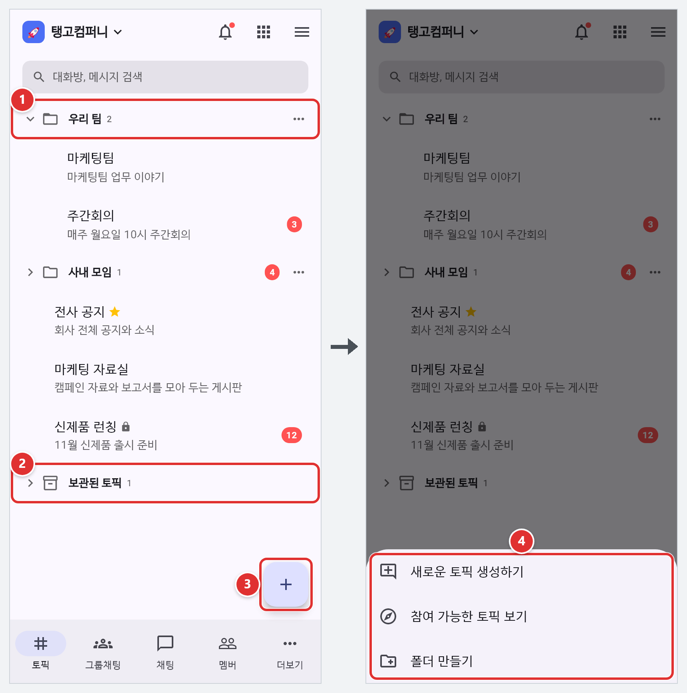
폴더 머리글을 누르면 접히고 펼쳐집니다. 오른쪽 ⋯(또는 머리글을 길게 누르기)로 이름 변경 · 폴더 삭제를 합니다.
보관된 토픽은 맨 아래 보관된 토픽에 모입니다.
오른쪽 아래 +를 누르면
새로운 토픽 생성하기 · 참여 가능한 토픽 보기 · 폴더 만들기를 고를 수 있습니다. 토픽 만들기와 찾기는 화면 가득 열리고, 내용은 PC와 같습니다(토픽 만들기, 참여 가능한 토픽 보기). 준회원에게는 폴더 만들기만 보입니다.

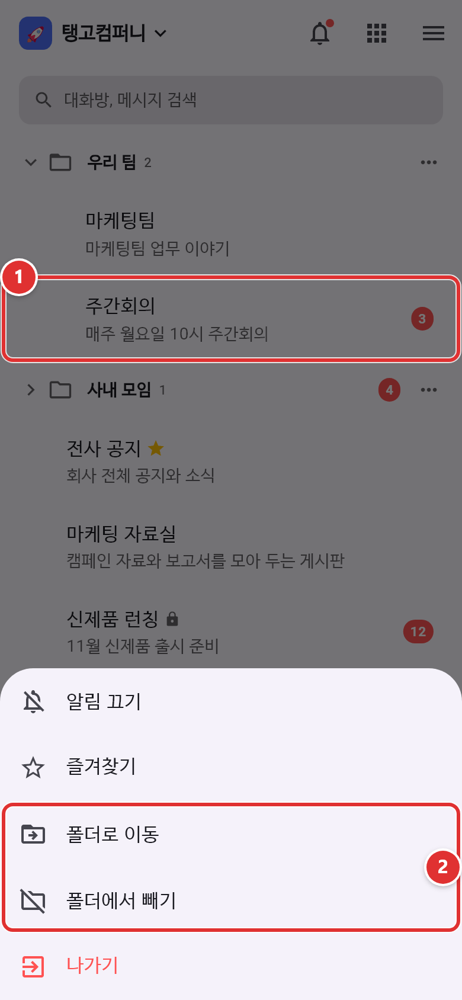
토픽을 길게 누르면 아래에서 메뉴가 올라옵니다(휴대폰에서는 끌어다 놓기 대신 이 메뉴를 씁니다).
폴더로 이동을 누르면 내 폴더 목록과 새 폴더…가 나옵니다. 폴더 안의 토픽이면 폴더에서 빼기도 있습니다.
메시지 길게 누르기 안드로이드

말풍선을 길게 누릅니다.
아래에서 메뉴가 올라옵니다: 메시지 공유 · 댓글 · 복사 · 선택 복사 · 업무로 등록 · 메시지 전달. 선택 복사는 글의 일부만 골라 복사할 때 씁니다.
PC와 다른 점
- 대화방 목록에서 방을 길게 누르면 알림 끄기, 즐겨찾기, 이름 변경(그룹채팅), 폴더로 이동(토픽), 숨기기/나가기 메뉴가 나옵니다(PC의 오른쪽 클릭 메뉴).
- 대화방 위쪽에도 멤버 수 · 알림 · 멤버 초대 · ⋮ 버튼이 있습니다(대화방 위쪽 버튼). 토픽의 읽기 전용 · 보관됨 표시는 이름 옆(자리가 좁으면 이름 아래)에 붙습니다.
- 댓글, 검색, 공지, 참여 멤버, 멤버 초대하기, 토픽 정보 변경하기, 게시글은 화면 가득 새 화면으로 열립니다.
- 메시지 고치기·지우기, 화면 캡처, 파일 끌어다 놓기, 대화창 분할은 휴대폰에서는 할 수 없습니다. PC에서 해 주세요.
- 도움말은 오른쪽 위 ☰ 메뉴에 있습니다.